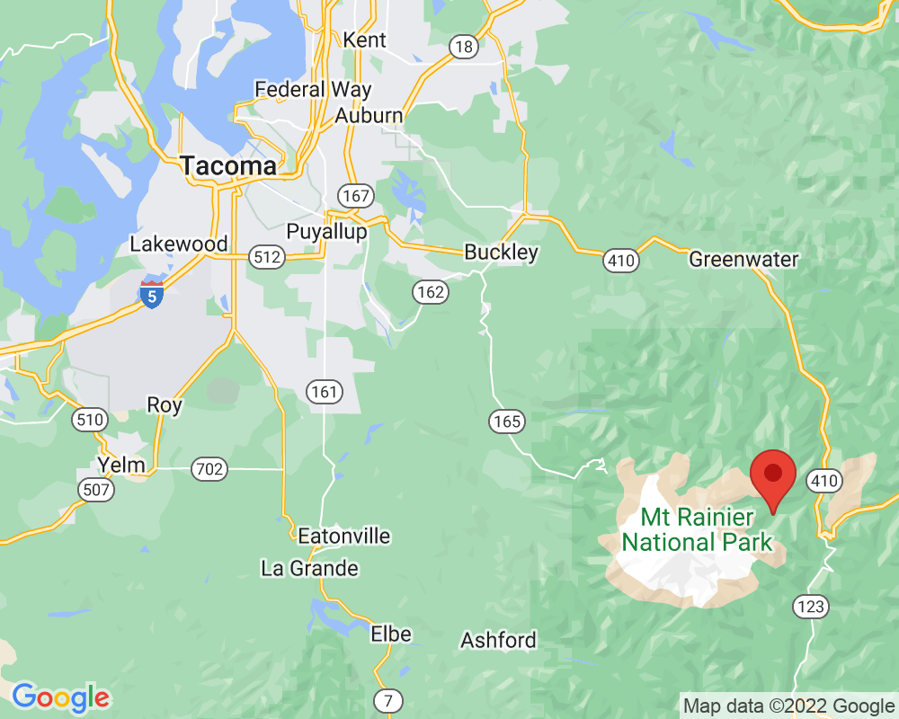

Car bridge over Fryingpan Creek
This bridge is for cars. It was built over 90 years ago and only designed to last 75 years. It gets inspected frequently to make sure it's still safe to drive over. Engineers are currently working on plans to replace it.
Visited: September 23, 2022 at 8:42 AM
Location: White River Entrance
